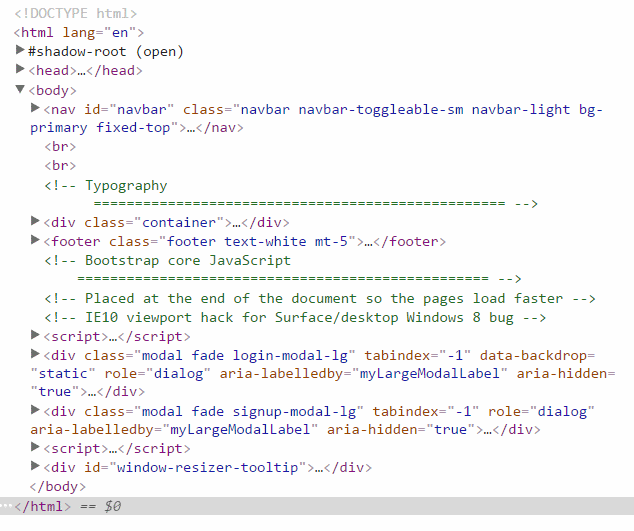

Support
We provide support by twitter @expresspixel or email support@expresspixel.com
Licencing: Please view licencing information on http://expresspixel.com/licenses
To use this template you'll need to develop your own crowdfunding platform or use a pre-existing one.
The easiest way to work with the theme is to include the stylesheets in "_includes/head.html" then use the different components and pre-built pages to build your system.
Continue by replacing the existing theme HTML with the CrowdFundr HTML
We use .scss files to control the colors and layout. You'll need to compile css/main.scss for the layout and styles. The bootstrap colors can be compiled using _css/_custom.scss and _css/_bootswatch.scss. The _css/_custom.scss contains all the colours and typography that you can edit for the theme.
This theme uses mostly a 2 column layout. The '.container-fluid' is used to control the width of the page.
The source files are built using Jekyll (note: You do not need to know how to use Jekyll, the template has full html code). These files are all found in files in the "src" directory. The individual components making up the layout of the page are found in the "_includes" directory. You can see these files in "_layouts/default.html". The pages are found in .html and .md front matter files used by Jekyll. One example of a page is the explore page "explore.html" - this extends "_layouts/default.html".
The entire site is built in "html". You can use that directly if you prefer pure HTML.
Below is an excerpt of the HTML structure. It has the nav on top followed by the inner content in either 'container' or 'container-fluid'. This is followed by the footer and modal boxes.
We've used Jekyll to build the site - for those interested the docs are here https://jekyllrb.com/docs/home/.
Jekyll uses Frontmatter and HTML for pages https://jekyllrb.com/docs/frontmatter/.
Sass was used for compiling the templates http://sass-lang.com/install. You can either use Jekyll itself to build it or use a GUI like Koala http://koala-app.com/.